Writing on a curved surface
The pen has to stay on the surface while the normal force stays inside its admissible band.
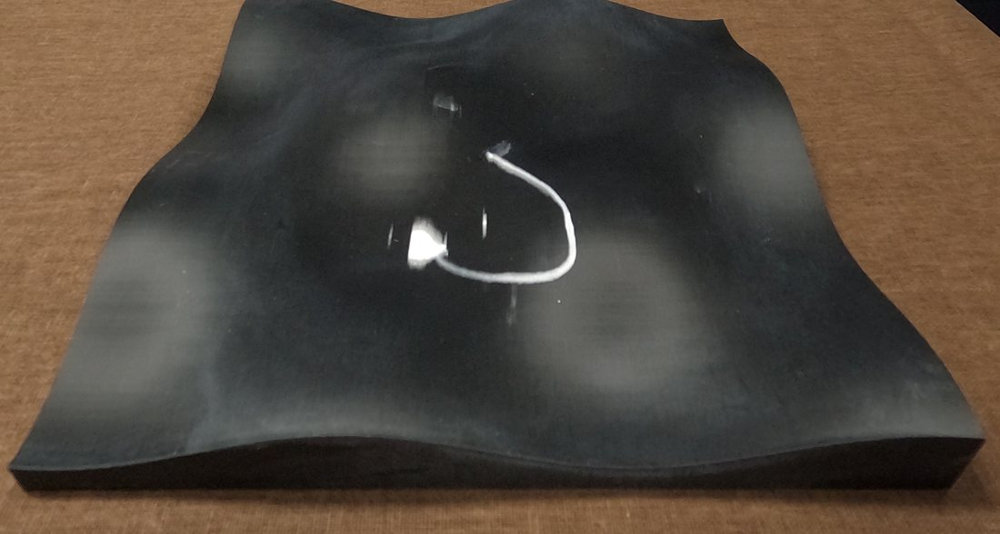
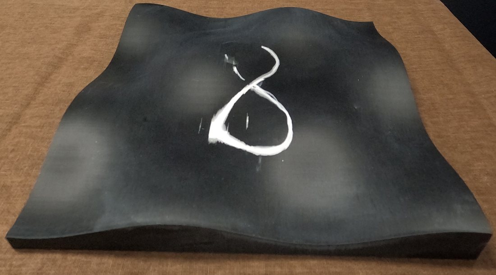
A sampling-based controller that makes contact-wrench and kinematic feasibility a property of every sampled control, rather than a penalty on the rollout cost.
Contact-rich manipulation requires not only kinematic feasibility but also dynamics-level admissibility of interaction wrenches to prevent slip, contact loss, or object instability. Existing hard-constrained Model Predictive Path Integral (MPPI) methods primarily enforce kinematic feasibility, whereas force-aware MPPI formulations typically account for interaction forces through rollout objectives or soft penalties.
This paper presents Contact-Aware Manifold Projection MPPI (CAMP-MPPI), a sampling-based control framework that jointly enforces contact-manifold consistency, kinematic inequalities, and hard dynamics-level wrench constraints within MPPI rollouts. CAMP-MPPI maps heterogeneous physical constraints into a common commanded-acceleration space, composes them into a single admissible set, and projects each sampled control to its closest feasible acceleration under an inertia-weighted metric. When a contact manifold is present, the projected controls are propagated through manifold-consistent dynamics.
Experiments on a Franka manipulator demonstrate stable surface interaction while maintaining admissible contact wrenches and stable passive-object transport under support-wrench constraints. The results show that CAMP-MPPI provides a unified mechanism for enforcing coupled kinematic and dynamics-level feasibility directly within the MPPI sampling process.
A motion can stay on a contact surface, or clear an obstacle, and still require a contact or support wrench outside its admissible range. Treating one side as a hard constraint and the other as a cost leaves a failure mode open.
The pen has to stay on the surface while the normal force stays inside its admissible band.


The tray has to swerve around a hanging obstacle without accelerating hard enough to tip the passive object.
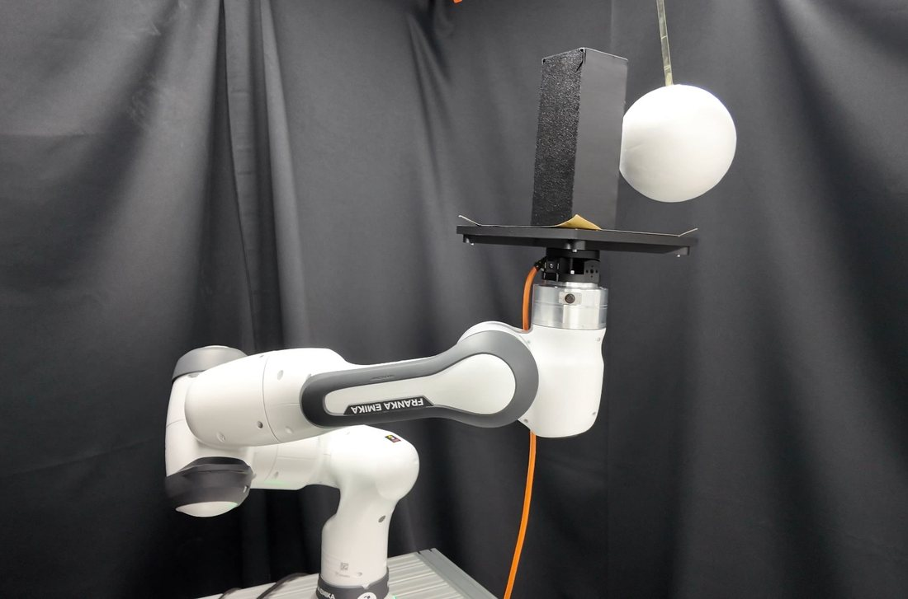
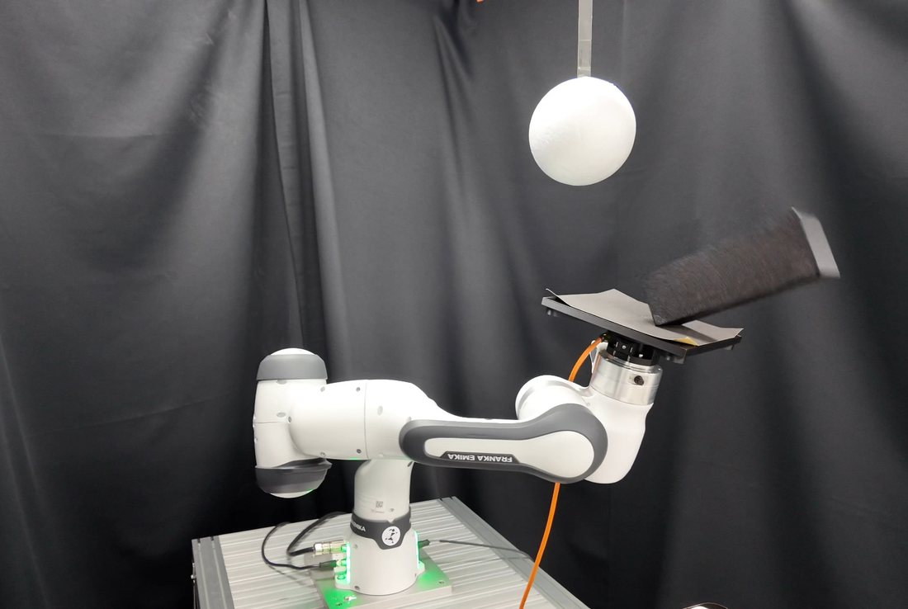
CAMP-MPPI samples commanded accelerations. At every rollout state it pulls wrench limits and kinematic safety constraints back into that space, projects each sample onto their intersection, and propagates the result through manifold-constrained dynamics.
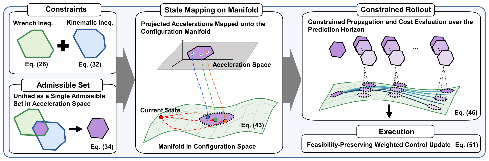
At a fixed rollout state, the reaction wrench needed to stay on the contact manifold is affine in the commanded acceleration, so each polyhedral wrench limit pulls back to a linear inequality on a. Kinematic safety functions, imposed through a second-order barrier condition, reduce to the same form. Stacking both gives a single convex set.
Each raw sample is moved to the closest admissible acceleration under the generalized inertia metric, in one joint projection rather than sequential corrections. The projected command is propagated through manifold-constrained dynamics, and the set is rebuilt at the next rollout state across the whole horizon.
At the first step every sample starts from the same measured state, so all projected commands share one convex admissible set and their MPPI-weighted average stays inside it. Manifold consistency of the executed motion comes from the same constrained dynamics.
| Controller | Manifold and kinematic constraints | Contact and support wrench |
|---|---|---|
| Vanilla MPPI | Rollout cost | Rollout cost |
| PR-MPPI | Hard, by projection | Not modeled |
| Torque-Sampling MPPI | Rollout cost | Soft rollout cost |
| CAMP-MPPI | Hard, one composite set | Hard, one composite set |
Two real-world tasks, each coupling a geometric or kinematic requirement with a dynamics-level wrench limit. Every method runs 10 trials per task.
The robot traces a figure-eight on a curved surface. It must stay on the contact manifold while the required normal wrench stays inside the admissible band around a nominal 3 N.
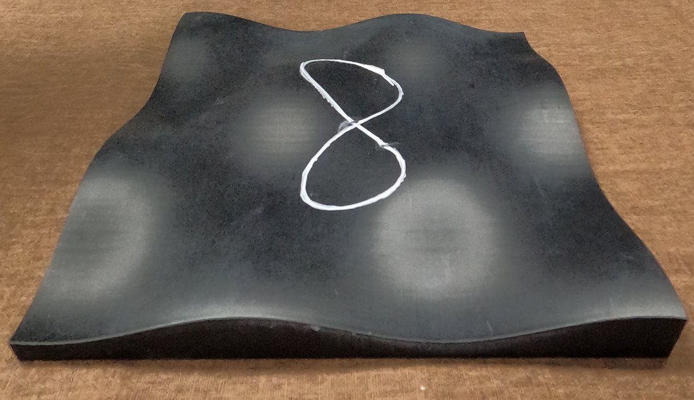
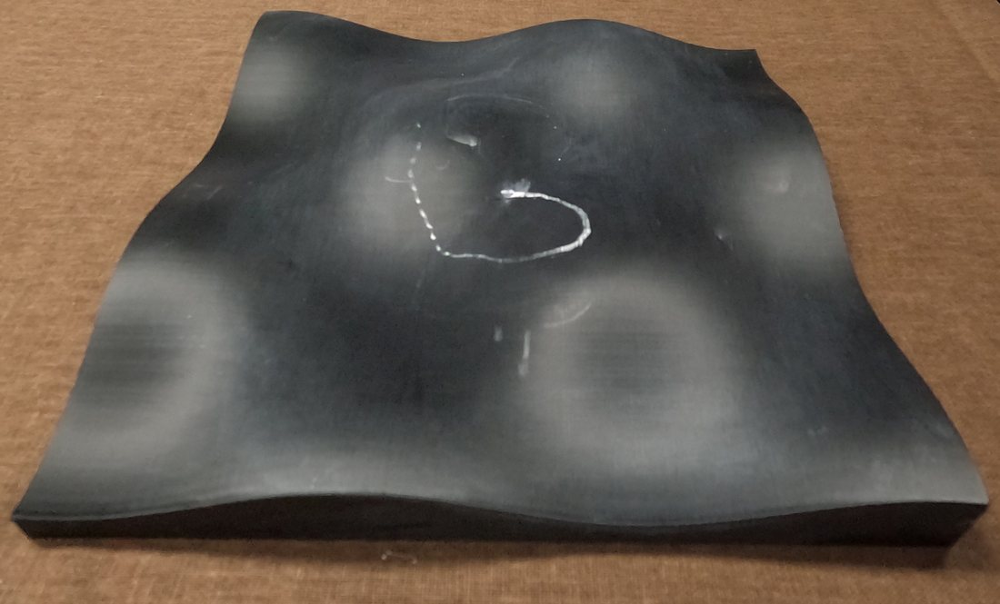
Table I. Performance and contact-load feasibility on curved-surface writing (10 trials)
| Method | Path RMSE [mm] |
Manifold RMS [mm] |
Load feas. [%] |
Max viol. [N] |
Completion [%] |
Comp. time [ms] |
|---|---|---|---|---|---|---|
| Vanilla MPPI† | 16.11 ± 14.11 | 1.675 ± 10.31 | 26.2 ± 7.1 | 27.1 ± 18.9 | 11 ± 0.6 | 3.02 ± 0.02 |
| PR-MPPI† | 0.686 ± 0.109 | 0.590 ± 0.098 | 52.6 ± 5.6 | 7.4 ± 18.3 | 39 ± 1.8 | 3.18 ± 0.34 |
| Torque-Sampling MPPI† | 2.249 ± 0.380 | 1.211 ± 0.720 | 88.4 ± 3.2 | 2.9 ± 1.6 | 84 ± 6.7 | 4.33 ± 0.03 |
| CAMP-MPPI | 0.735 ± 0.134 | 1.087 ± 0.011 | 100.0 ± 0.0 | 0.0 ± 0.0 | 100.0 ± 0.0 | 6.68 ± 0.11 |
† Path RMSE and manifold RMS are computed over the executed portion only, so small geometric errors from incomplete runs should be read together with completion.
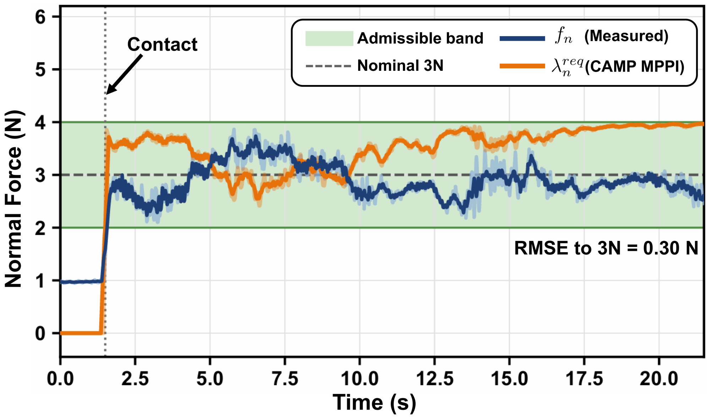
After contact is established, the normal wrench required by CAMP-MPPI remains within the 2–4 N admissible band, and the measured normal force tracks the nominal 3 N with an RMSE of 0.30 N. The controller keeps the geometric contact constraint and admissible loading throughout the trace.
Fig. 4. Wrench admissibility and measured force tracking during curved-surface writing.
A tall passive object rides on a tray through an obstacle-constrained workspace. The controller needs enough evasive motion to keep its clearance, but not so much tray acceleration that the support wrench tips the object.
Hardware
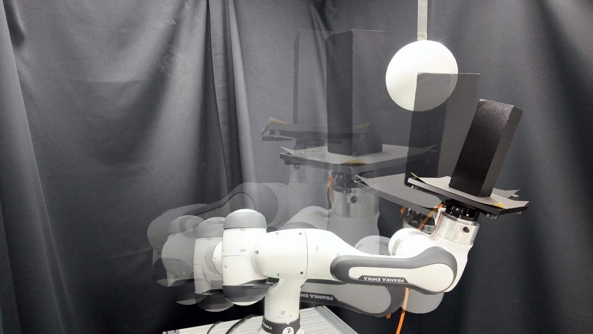
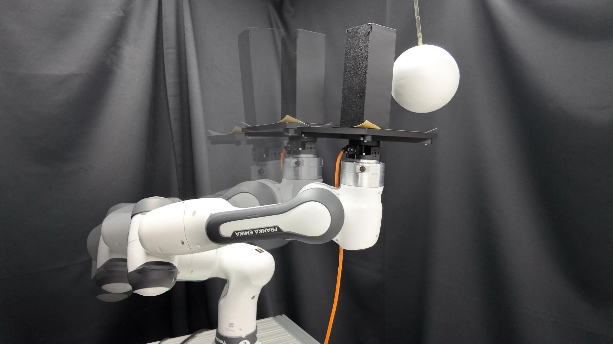
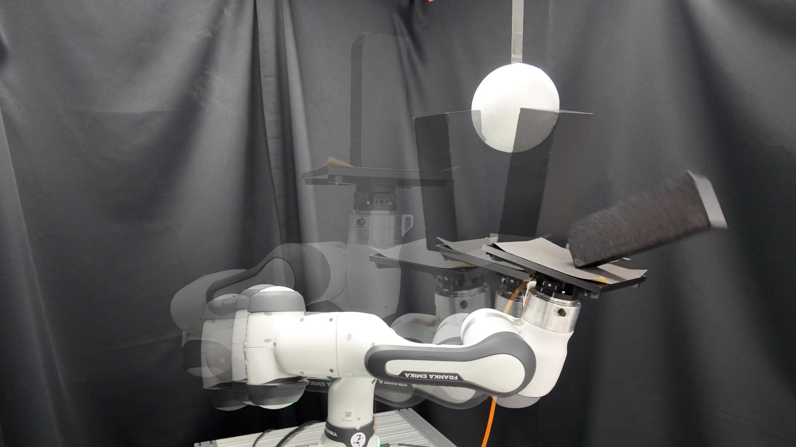
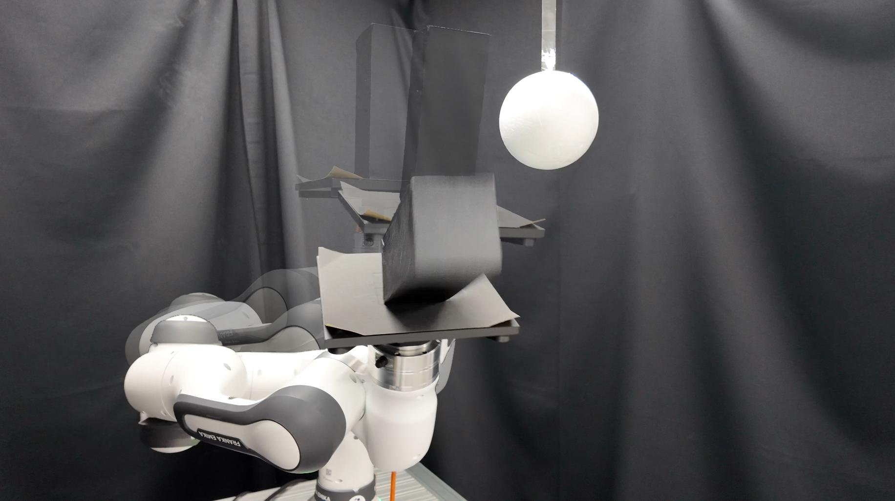
Simulation
Table II. Support-wrench feasibility, task outcomes, and computation time on tray transport (10 trials)
| Method | Wrench feas. [%] |
Max viol. [mm] |
Viol. time [%] |
Peak |ah|/amax [%] |
Upright / Coll. / Tip. [trials] |
Comp. time [ms] |
|---|---|---|---|---|---|---|
| Vanilla MPPI | 80.2 ± 2.4 | 41.1 ± 9.7 | 19.8 ± 4.0 | 137 ± 11.9 | 0 / 3 / 7 | 5.23 ± 0.33 |
| PR-MPPI | 82.4 ± 4.0 | 96.7 ± 12.4 | 17.6 ± 4.3 | 160 ± 19.6 | 0 / 0 / 10 | 5.81 ± 0.31 |
| Torque-Sampling MPPI | 86.2 ± 6.2 | 35.1 ± 13.5 | 18.8 ± 6.2 | 125 ± 26.1 | 0 / 8 / 2 | 6.76 ± 0.58 |
| CAMP-MPPI | 100.0 ± 0.0 | 0.0 ± 0.0 | 0.0 ± 0.0 | 97 ± 1.9 | 10 / 0 / 0 | 8.25 ± 0.39 |
Task outcomes count upright completions, collisions, and tipping failures.
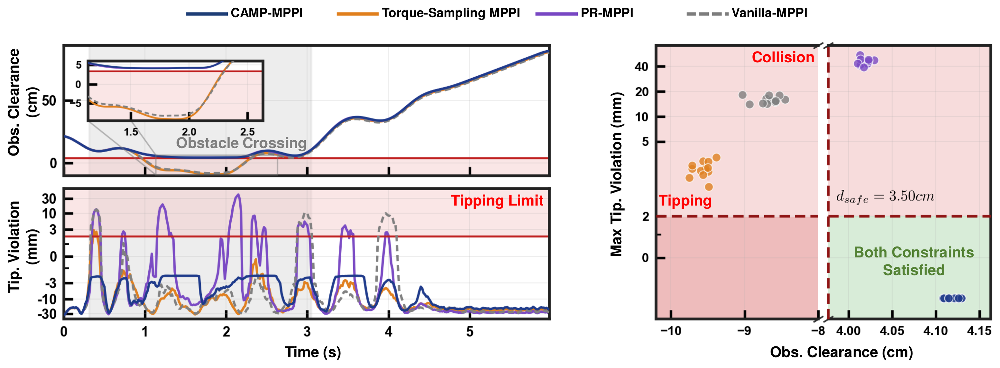
Enforcing dynamics-level wrench admissibility directly inside the MPPI sampling process, together with geometric and kinematic constraints, removes the trade-off that soft or partial constraint handling leaves open. Future work will address contact-mode transitions, uncertainty-aware wrench constraints, and more general multi-contact interactions.
@inproceedings{campmppi,
title = {{CAMP-MPPI}: Contact-Aware Manifold Projection {MPPI} for
Hard Dynamics-Level Contact-Wrench Constraints},
author = {Anonymous Authors},
booktitle = {IEEE International Conference on Robotics and Automation (ICRA)},
note = {Under review},
year = {2027}
}